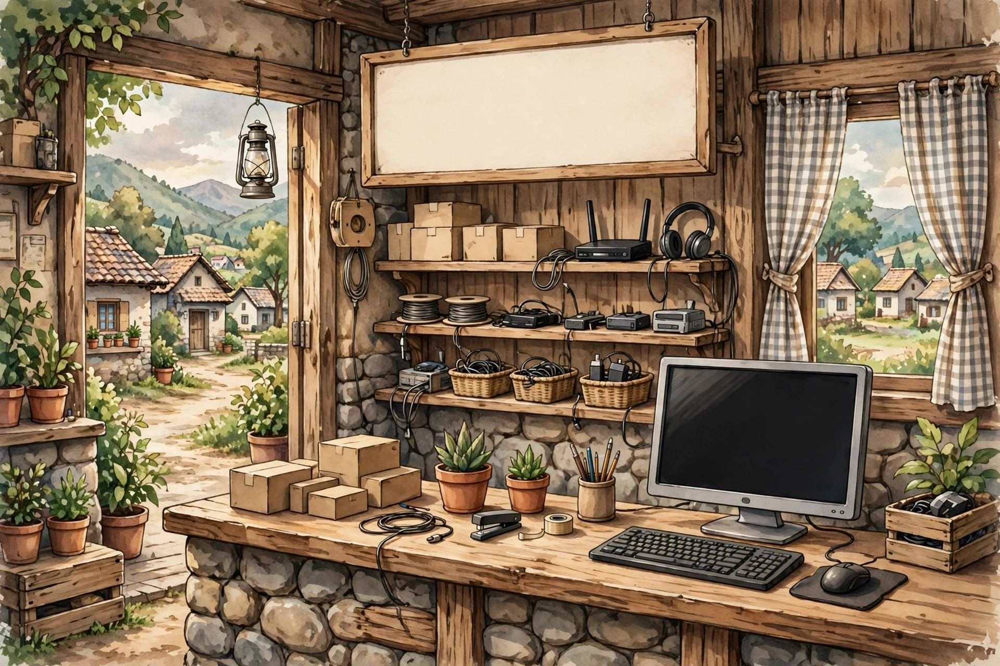
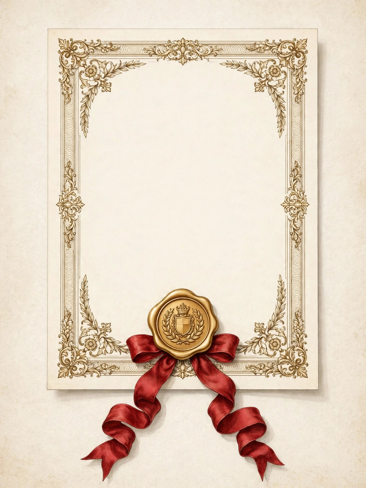
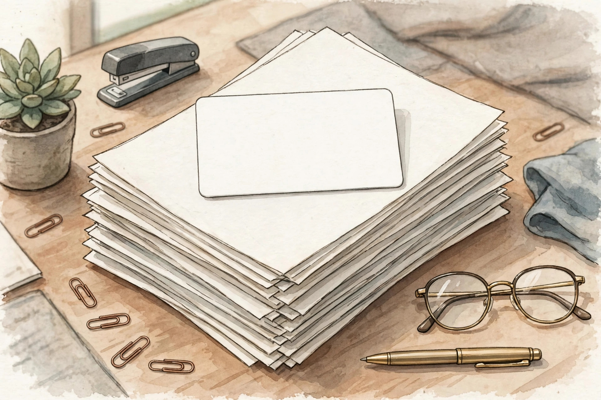
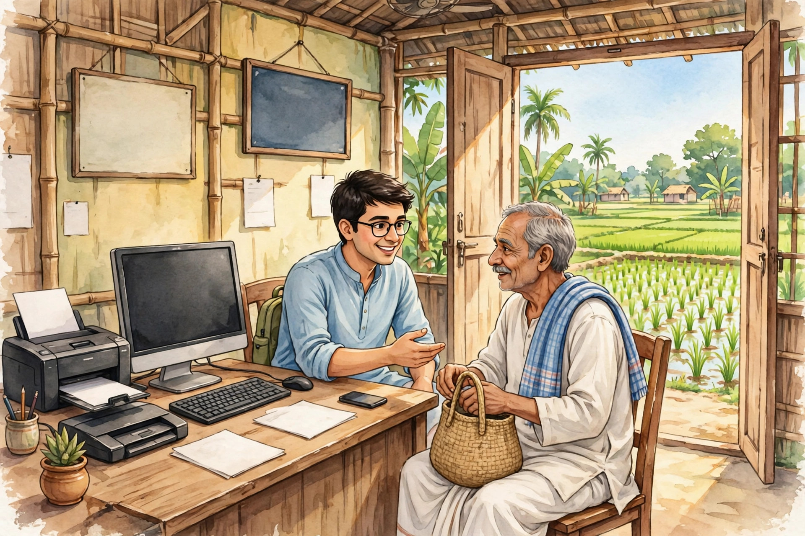

🏪 CSC সম্পূর্ণ সিরিজ:
TEC থেকে আয় পর্যন্ত
CSC খোলার স্বপ্ন? একদম শুরু থেকে শেষ পর্যন্ত — প্রতিটি ধাপ ধারাবাহিকভাবে সাজানো। পর্ব ১ থেকে শুরু করুন, একটা একটা করে এগোন।

CSC কী? কমন সার্ভিস সেন্টার সম্পূর্ণ গাইড
CSC কী, VLE কারা, Digital Seva পোর্টাল কীভাবে কাজ করে — ভূমিকা পর্ব।
→ ২
TEC সার্টিফিকেট: সম্পূর্ণ গাইড
ফি ₹১,৪৭৯, ১০টা মডিউল, অনলাইন ভর্তি ও পরীক্ষা — CSC-এর আগের বাধ্যতামূলক ধাপ।
→ ৩
CSC-এর জন্য কী কী কাগজপত্র লাগবে
আধার, প্যান, ছবি, ব্যাংক বিবরণসহ আবেদনের সম্পূর্ণ কাগজের তালিকা।
→ ৪
CSC ID আবেদন: সম্পূর্ণ ধাপে ধাপে গাইড
নতুন পোর্টালে ফর্মের প্রতিটি ধাপ — TEC যাচাই থেকে সাবমিট পর্যন্ত।
→ ৫
CSC ID পাওয়ার পরে কী করবেন
Digital Seva লগইন, প্রোফাইল, সেবা চালু, সেন্টার সাজানো — ID-পরের পুরো রোডম্যাপ।
→ ৬
CSC থেকে কী কী সেবা দেওয়া যায়
আধার, প্যান, ব্যাংকিং, টিকিট, বিল পেমেন্ট — ক্যাটাগরি অনুযায়ী সম্পূর্ণ তালিকা।
→ ৭CSC থেকে আয়: কমিশন কীভাবে কাজ করে
কমিশন মডেল, আয় কীসের উপর নির্ভর করে — সৎ প্রত্যাশাসহ শেষ পর্ব।
→💬 CSC নিয়ে প্রশ্ন আছে? আমাদের WhatsApp গ্রুপে যোগ দিন — WhatsApp গ্রুপে যোগ দিন
📺 ভিডিওতে দেখতে চান? YouTube চ্যানেল সাবস্ক্রাইব করুন: @DafadarOnlineSeva